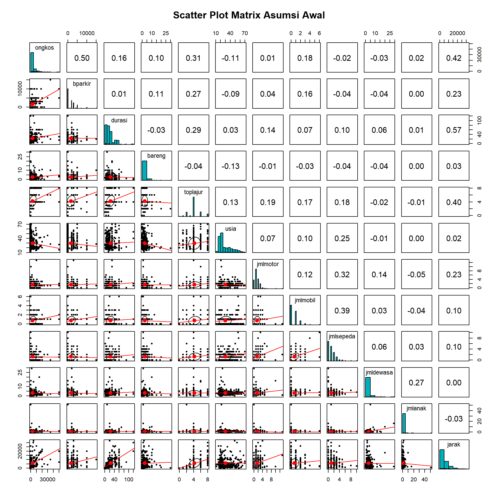
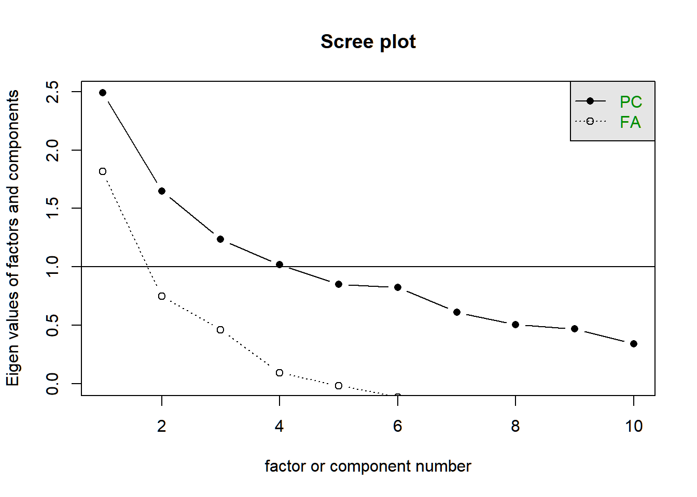

Modul 10 Analisis Hubungan Multivariat Interdependensi - Analisis Faktor dan PCA
Setelah mempelajari modul ini, Anda diharapkan dapat menghasilkan komponen prinsip menggunakan perangkat lunak komputer STP-14.3
10.1 Pendahuluan
Analisis Komponen Prinsip (Principal Component Analysis, PCA) dan Analisis Faktor (Common Factor Analysis) adalah metode analisis multivariat yang digunakan untuk meringkas atau mereduksi jumlah variabel yang banyak menjadi beberapa dimensi baru (disebut komponen atau faktor) yang lebih sedikit, namun tetap merepresentasikan informasi dari variabel asli.
Kedua metode ini termasuk dalam analisis interdependensi, di mana seluruh variabel dianggap setara dan saling berhubungan satu sama lain, tanpa ada pembagian variabel independen dan dependen.
10.2 Studi Kasus
Kita akan menggunakan data Bindar (2022), yaitu penelitian mengenai preferensi masyarakat Kota Bandung dalam mengakses lokasi Car-Free Day (CFD). Terdapat 12 variabel yang akan dianalisis:
-
ongkos: Total biaya perjalanan -
bparkir: Biaya parkir -
durasi: Durasi perjalanan -
bareng: Jumlah rombongan dalam perjalanan -
toplajur: Jumlah lajur jalan terbanyak yang dilalui -
usia: Usia pelaku perjalanan -
jmlmotor: Jumlah sepeda motor di rumah tangga -
jmlmobil: Jumlah mobil di rumah tangga -
jmlsepeda: Jumlah sepeda di rumah tangga -
jmldewasa: Jumlah orang dewasa dalam rumah tangga -
jmlanak: Jumlah anak-anak dalam rumah tangga -
jarak: Jarak tempuh dari rumah ke lokasi CFD
10.3 Memuat Pustaka (Libraries)
Kita membutuhkan paket tidyverse untuk manipulasi data dan psych untuk melakukan uji KMO, Bartlett, serta fungsi analisis faktor dan PCA.
10.4 Asumsi Awal
Sebelum melakukan analisis komponen prinsip atau analisis faktor, idealnya kita perlu memeriksa asumsi dasar, yaitu:
- Linearitas: Adanya hubungan linear antarvariabel.
- Normalitas: Variabel berdistribusi normal multivariat.
Kita dapat melakukan inspeksi visual menggunakan matriks diagram pencar (scatter plot matrix). Di sini kita menggunakan fungsi pairs.panels dari paket psych yang memberikan informasi lengkap berupa scatter plot, histogram, dan nilai korelasi.
# Membaca data (Kita muat di sini untuk keperluan inspeksi awal)
# Jika data belum dimuat, baris ini akan memuatnya.
data_cfd <- read_csv2("datasets/Data Praktikum 09.csv")
# Memilih 12 variabel metrik yang akan dianalisis sesuai studi kasus
# Variabel ini sama dengan yang akan digunakan pada tahap persiapan data selanjutnya
data_selected <- data_cfd |>
select(
ongkos, bparkir, durasi, bareng, toplajur, usia,
jmlmotor, jmlmobil, jmlsepeda, jmldewasa, jmlanak, jarak
)
# Membuat Scatter Plot Matrix menggunakan psych::pairs.panels
pairs.panels(data_selected,
method = "pearson", # Menggunakan korelasi Pearson
hist.col = "#00AFBB", # Warna histogram
density = FALSE, # Tidak menampilkan garis density agar lebih bersih
lm.col = "red", # Mengubah warna data points menjadi abu-abu gelap
ellipses = TRUE, # Menampilkan elips korelasi untuk melihat pola linearitas
lm = TRUE, # Menampilkan garis regresi linear lurus
main = "Scatter Plot Matrix Asumsi Awal"
)
Penjelasan Kode dan Output:
-
Kode: Kita menggunakan fungsi
pairs.panelsdari paketpsych. Argumenmethod = "pearson"digunakan untuk menghitung koefisien korelasi Pearson.hist.colmengatur warna histogram di diagonal utama.ellipses = TRUEmenambahkan elips yang menggambarkan kovarians dan arah hubungan. -
Output:
- Diagonal Utama: Menampilkan histogram distribusi frekuensi untuk setiap variabel. Kita dapat melihat apakah distribusi variabel mendekati normal (bentuk lonceng) atau menceng (skewed).
- Bawah Diagonal: Menampilkan scatter plot (diagram pencar) untuk setiap pasangan variabel. Ini berguna untuk mendeteksi pola hubungan (apakah linear) dan adanya pencilan (outliers).
- Atas Diagonal: Menampilkan nilai koefisien korelasi Pearson (\(r\)). Ukuran font angka korelasi menyesuaikan dengan besarnya nilai korelasi (semakin besar nilai, semakin besar font). Interpretasi Singkat:
- Normalitas: Pada diagonal utama, histogram yang berbentuk lonceng menunjukkan distribusi mendekati normal. Distribusi yang menceng (skewed) atau tidak simetris menandakan ketidaknormalan.
-
Linearitas: Perhatikan bagian bawah diagonal (Scatter Plot).
- Garis Tren: Indikasi linearitas dapat dilihat dari garis tren (biasanya berwarna merah) yang terbentuk di antara titik-titik data. Jika garis tersebut cenderung lurus, maka hubungan antar variabel bersifat linear.
- Elips: Bentuk elips menunjukkan kekuatan korelasi. Elips yang pipih (sempit) menandakan korelasi kuat dan hubungan yang jelas. Sebaliknya, elips yang cenderung bulat menandakan korelasi yang lemah.
- Perbesar grafik dengan membuka hasil di jendela baru atau klik ‘Zoom’ jika ia muncul di panel ‘Plots’.
Latihan 2:
Berdasarkan Scatter Plot Matrix di atas:
- Sebutkan satu variabel yang menurut Anda memiliki distribusi mendekati normal (lihat histogram diagonal)!
- Sebutkan pasangan variabel yang memiliki hubungan linear cukup kuat (lihat bentuk elips/sebaran data)!
10.5 Mempersiapkan Data
Kita memastikan kembali variabel yang akan digunakan dalam analisis ini.
# Memilih variabel yang akan dianalisis
data_analisis <- data_cfd |>
select(
ongkos, bparkir, durasi, bareng, toplajur, usia,
jmlmotor, jmlmobil, jmlsepeda, jmldewasa, jmlanak, jarak
)
# Melihat sekilas data
glimpse(data_analisis)## Rows: 319
## Columns: 12
## $ ongkos <dbl> 464.40, 464.40, 464.40, 0.00, 0.00, 0.00, 0.00, 0.00, 0.00, 0.00, 10000.00, 30000.00, 0.00…
## $ bparkir <dbl> 2000, 2000, 3000, 0, 0, 0, 0, 0, 0, 0, 2000, 5000, 0, 0, 0, 0, 0, 0, 0, 3000, 0, 0, 0, 0, …
## $ durasi <dbl> 20, 10, 15, 30, 5, 30, 5, 30, 5, 9, 30, 30, 10, 30, 2, 30, 60, 30, 30, 30, 20, 5, 45, 60, …
## $ bareng <dbl> 2, 0, 2, 5, 2, 0, 0, 0, 0, 0, 2, 3, 1, 0, 10, 3, 2, 3, 3, 2, 1, 1, 0, 1, 1, 1, 3, 0, 0, 1,…
## $ toplajur <dbl> 4, 4, 4, 8, 2, 4, 4, 4, 0, 2, 8, 6, 4, 4, 2, 4, 6, 4, 4, 4, 4, 4, 8, 4, 4, 4, 2, 4, 6, 6, …
## $ usia <dbl> 45, 46, 50, 25, 22, 63, 22, 60, 20, 19, 16, 46, 22, 28, 50, 28, 17, 28, 25, 43, 34, 17, 70…
## $ jmlmotor <dbl> 2, 2, 3, 0, 2, 1, 1, 2, 1, 0, 2, 1, 1, 4, 5, 1, 3, 1, 1, 1, 1, 1, 1, 1, 2, 1, 0, 1, 1, 1, …
## $ jmlmobil <dbl> 0, 1, 0, 0, 3, 1, 1, 1, 0, 0, 2, 1, 0, 0, 1, 0, 0, 0, 0, 0, 0, 0, 2, 0, 0, 0, 0, 0, 1, 0, …
## $ jmlsepeda <dbl> 2, 4, 0, 2, 3, 2, 1, 1, 0, 0, 0, 2, 0, 2, 6, 1, 4, 1, 1, 0, 1, 0, 3, 3, 1, 0, 1, 1, 1, 1, …
## $ jmldewasa <dbl> 4, 4, 4, 3, 5, 2, 2, 4, 1, 1, 3, 1, 5, 2, 2, 3, 5, 12, 5, 2, 1, 2, 5, 2, 6, 2, 12, 3, 3, 2…
## $ jmlanak <dbl> 1, 1, 0, 0, 0, 0, 1, 0, 0, 0, 2, 2, 0, 0, 0, 0, 3, 3, 0, 1, 0, 0, 0, 1, 2, 0, 0, 0, 1, 0, …
## $ jarak <dbl> 3000, 3000, 3000, 7000, 280, 7000, 600, 7200, 0, 500, 5000, 4000, 2000, 5000, 1000, 5000, …Latihan 1:
Berdasarkan output glimpse di atas, jawablah pertanyaan berikut:
- Berapa jumlah observasi (baris) atau objek dalam data tersebut?
- Berapa jumlah variabel (kolom) yang aktif digunakan dalam analisis?
10.6 Uji Kelayakan Data (Asumsi)
Sebelum melakukan ekstraksi dimensi, kita perlu memastikan data layak untuk dianalisis faktor/PCA. Dua indikator utama adalah Uji Bartlett of Sphericity dan Measure of Sampling Adequacy (MSA) atau Kaiser-Meyer-Olkin (KMO).
10.6.1 Uji Bartlett of Sphericity
Uji ini melihat apakah terdapat korelasi antarvariabel dalam data. Syarat: Nilai \(p < 0,05\).
# Uji Bartlett
cortest.bartlett(data_analisis)## $chisq
## [1] 573.4283
##
## $p.value
## [1] 5.636504e-82
##
## $df
## [1] 66Latihan 3:
Lihat nilai \(p.value\) pada output di atas. Apakah nilai tersebut \(< 0.05\)? Apa kesimpulan Anda mengenai korelasi antar variabel dalam data ini? (Apakah matriks korelasi berbeda secara signifikan dengan matriks identitas?)
10.6.2 Uji KMO dan MSA
Nilai KMO keseluruhan harus \(> 0,5\). Selain itu, nilai MSA per variabel (diagonal pada matriks anti-image correlation) juga harus \(> 0,5\).
# Uji KMO
KMO(data_analisis)## Kaiser-Meyer-Olkin factor adequacy
## Call: KMO(r = data_analisis)
## Overall MSA = 0.63
## MSA for each item =
## ongkos bparkir durasi bareng toplajur usia jmlmotor jmlmobil jmlsepeda jmldewasa jmlanak
## 0.66 0.65 0.60 0.63 0.81 0.62 0.61 0.61 0.57 0.48 0.44
## jarak
## 0.64Berdasarkan hasil di atas: - Nilai KMO Keseluruhan (Overall MSA) = 0,63 (Layak, > 0,5). - Namun, jika dilihat per variabel (MSA for each item), terdapat variabel dengan nilai < 0,5 yaitu jmldewasa (0,48) dan jmlanak (0,44).
Sesuai prosedur, kita harus mengeluarkan variabel yang tidak memenuhi syarat MSA.
# Mengeluarkan variabel jmldewasa dan jmlanak
data_analisis_final <- data_analisis |>
select(-jmldewasa, -jmlanak)
# Cek ulang KMO
KMO(data_analisis_final)## Kaiser-Meyer-Olkin factor adequacy
## Call: KMO(r = data_analisis_final)
## Overall MSA = 0.65
## MSA for each item =
## ongkos bparkir durasi bareng toplajur usia jmlmotor jmlmobil jmlsepeda jarak
## 0.66 0.65 0.60 0.63 0.82 0.62 0.64 0.62 0.58 0.64Sekarang seluruh variabel memiliki MSA > 0,5 dan KMO keseluruhan naik menjadi 0,68. Data siap diekstraksi.
10.7 Mengekstrak Dimensi Baru
Langkah selanjutnya adalah menentukan berapa jumlah dimensi (faktor/komponen) yang akan dibentuk. Kita dapat menggunakan Analisis Paralel atau melihat Nilai Eigen (Eigenvalues) dan Scree Plot.
10.7.1 Nilai Eigen dan Total Variansi
Kita akan melihat berapa banyak variansi yang bisa dijelaskan oleh setiap komponen.
# Melakukan PCA tanpa rotasi untuk melihat Eigenvalues
analisis_awal <- principal(data_analisis_final, nfactors = 10, rotate = "none")
# Menampilkan nilai eigen
analisis_awal$values## [1] 2.4878770 1.6496907 1.2355641 1.0172985 0.8514614 0.8261586 0.6137405 0.5061041 0.4703792 0.3417258Kriteria umum penentuan jumlah dimensi: 1. Kaiser’s Criterion: Ambil komponen dengan nilai eigen > 1. 2. Cumulative Variance: Ambil jumlah komponen yang menjelaskan total variansi > 60%.
Dari nilai eigen di atas, terdapat 4 komponen dengan nilai > 1 (2.488, 1.650, 1.236, 1.017).
10.7.2 Scree Plot
Grafik ini menunjukkan penurunan nilai eigen. Titik di mana grafik mulai melandai (siku) menunjukkan batas jumlah faktor.
# Membuat Scree Plot
scree(data_analisis_final, pc = TRUE)
Latihan 4:
- Berdasarkan Kaiser’s Criterion (Nilai Eigen > 1) pada sub-bab 9.7.1, berapa komponen yang sebaiknya diekstrak?
- Berdasarkan Scree Plot di atas (lihat titik siku/ elbow), berapa komponen yang sebaiknya diekstrak?
Berdasarkan analisis-analisis sebelumnya, diputuskan untuk menggunakan 4 dimensi.
10.8 Melakukan Analisis Faktor dan Rotasi
Kita akan melakukan ekstraksi 4 faktor menggunakan metode Analisis Faktor (untuk pengelompokan variabel) dan PCA (untuk pembentukan variat), kemudian melakukan Rotasi Varimax agar pengelompokan variabel lebih tegas (nilai loading kontras).
10.8.1 Analisis Faktor (Common Factor Analysis)
Analisis ini bertujuan mengelompokkan variabel-variabel yang mirip (korelasi tinggi) ke dalam faktor laten.
# Analisis Faktor dengan 4 faktor dan rotasi Varimax
# fm="pa" (Principal Axis) adalah metode umum untuk Common Factor Analysis di R (mirip SPSS)
af_result <- fa(data_analisis_final, nfactors = 4, rotate = "varimax", fm = "pa")
# Menampilkan hasil loading faktor
print(af_result$loadings, cutoff = 0.3)##
## Loadings:
## PA1 PA2 PA3 PA4
## ongkos 0.667
## bparkir 0.699
## durasi 0.660
## bareng
## toplajur 0.364 0.401
## usia 0.420
## jmlmotor 0.300
## jmlmobil 0.391
## jmlsepeda 1.004
## jarak 0.855
##
## PA1 PA2 PA3 PA4
## SS loadings 1.404 1.329 1.238 0.424
## Proportion Var 0.140 0.133 0.124 0.042
## Cumulative Var 0.140 0.273 0.397 0.440Catatan: cutoff = 0.3 digunakan untuk menyembunyikan nilai loading yang kecil agar tabel lebih mudah dibaca.
Cara Membaca Output: Perhatikan matriks komponen yang dirotasi (Rotated Factor Matrix). Setiap kolom (PA1, PA2, dst) merepresentasikan faktor. Nilai angka adalah factor loading (korelasi antara variabel dengan faktor).
Contoh Identifikasi Faktor 1 (PA1): Lihat kolom PA1. Variabel dengan nilai loading terbesar (dan di atas 0.5) adalah: - durasi (0.98) - jarak (0.96) Maka, Faktor 1 dibentuk oleh durasi dan jarak.
Latihan 5:
Berdasarkan output di atas, tentukan variabel pembentuk faktor lainnya:
- Faktor 2 (PA2): Variabel apa saja yang memiliki loading tinggi di kolom ini?
- Faktor 3 (PA3): Variabel apa saja yang memiliki loading tinggi di kolom ini?
- Faktor 4 (PA4): Variabel apa saja yang memiliki loading tinggi di kolom ini?
10.8.2 Analisis Komponen Prinsip (PCA)
Jika tujuan kita adalah mereduksi data menjadi skor komponen untuk analisis lanjutan (misal regresi), kita menggunakan PCA.
# PCA dengan 4 komponen dan rotasi Varimax
pca_result <- principal(data_analisis_final, nfactors = 4, rotate = "varimax")
# Menampilkan hasil loading komponen (untuk interpretasi)
print(pca_result$loadings, cutoff = 0.3)##
## Loadings:
## RC1 RC3 RC2 RC4
## ongkos 0.791
## bparkir 0.823
## durasi 0.847
## bareng 0.806
## toplajur 0.490 0.425
## usia 0.324 -0.601
## jmlmotor 0.344 0.597
## jmlmobil 0.385 0.638
## jmlsepeda 0.833
## jarak 0.825
##
## RC1 RC3 RC2 RC4
## SS loadings 1.840 1.753 1.626 1.171
## Proportion Var 0.184 0.175 0.163 0.117
## Cumulative Var 0.184 0.359 0.522 0.639
# Menampilkan bobot skor komponen (weights) untuk pembentukan skor
print(pca_result$weights, digits = 3)## RC1 RC3 RC2 RC4
## ongkos 0.0254 0.4485 -0.0730 0.0301
## bparkir -0.1330 0.5089 -0.0205 0.0298
## durasi 0.5237 -0.1667 -0.0855 -0.0144
## bareng -0.0276 -0.0299 0.1825 0.7256
## toplajur 0.1979 0.1949 0.0396 -0.1924
## usia -0.0194 -0.0251 0.1391 -0.4847
## jmlmotor 0.1783 -0.2001 0.3905 0.2852
## jmlmobil -0.2100 0.2495 0.3974 -0.0890
## jmlsepeda -0.0496 -0.0641 0.5290 -0.0047
## jarak 0.4506 0.0303 -0.0532 0.0381Identifikasi Persamaan Komponen
Komponen Prinsip (RC) adalah kombinasi linear dari variabel asal (yang sudah distandarisasi). Persamaannya dapat ditulis sebagai: \[RC_j = w_{1j}Z_1 + w_{2j}Z_2 + \dots + w_{pj}Z_p\] Dimana \(w\) adalah nilai Component Score Coefficients (Weights), bukan nilai loading. Loading hanya menunjukkan korelasi, sedangkan weights menunjukkan bobot kontribusi setiap variabel dalam pembentukan skor komponen.
Contoh: Misalkan kita ingin membentuk persamaan untuk RC1. Lihat output Weights pada kolom RC1: - durasi: 0.524 - jarak: 0.451 - Variabel lain memiliki bobot yang lebih kecil.
Maka persamaannya: \[RC1 \approx 0.524(Z_{durasi}) + 0.451(Z_{jarak}) + \dots\]
Menghasilkan Component Score
Untuk mendapatkan nilai skor komponen setiap observasi secara otomatis, kita dapat mengakses objek $scores dari hasil PCA.
# Menampilkan 6 baris pertama dari skor komponen
head(pca_result$scores)## RC1 RC3 RC2 RC4
## [1,] -0.1944617 -0.4804209 0.36717340 -0.54187967
## [2,] -0.7752196 -0.1911165 1.50812139 -1.14287093
## [3,] -0.2069996 -0.2693966 -0.04572532 -0.49628033
## [4,] 0.7677605 -0.2647856 -0.21284551 0.01899626
## [5,] -1.6702167 -0.2667413 1.87084197 0.22728535
## [6,] 0.1797747 -0.6385342 0.52415727 -2.00189106Latihan 6:
Berdasarkan output weights PCA di atas, tuliskan persamaan matematis terbentuknya komponen RC2! (Sebutkan variabel mana saja yang memiliki kontribusi besar beserta koefisien weights-nya).
10.9 Interpretasi dan Penamaan Dimensi
Langkah terakhir adalah memberi nama pada dimensi yang terbentuk berdasarkan variabel-variabel pembentuknya.
Latihan 7: Tuliskan seluruh kelompok dari analisis faktor dan juga seluruh persamaan komponen yang dihasilkan dari PCA!
Aktivitas Mandiri Komprehensif: Analisis PCA Mandiri [STP-14.3].{capaian}
Gunakan dataset dengan variabel metrik yang berbeda:
- Persiapan: Pilih variabel, cek normalitas, uji Bartlett/KMO
- Ekstraksi: Hitung eigenvalues, buat scree plot, tentukan jumlah komponen
- Analisis: Lakukan PCA dengan rotasi Varimax
- Interpretasi: Identifikasi variabel pembentuk, beri nama komponen, tuliskan persamaan
- Evaluasi: Hitung proporsi variansi yang dijelaskan